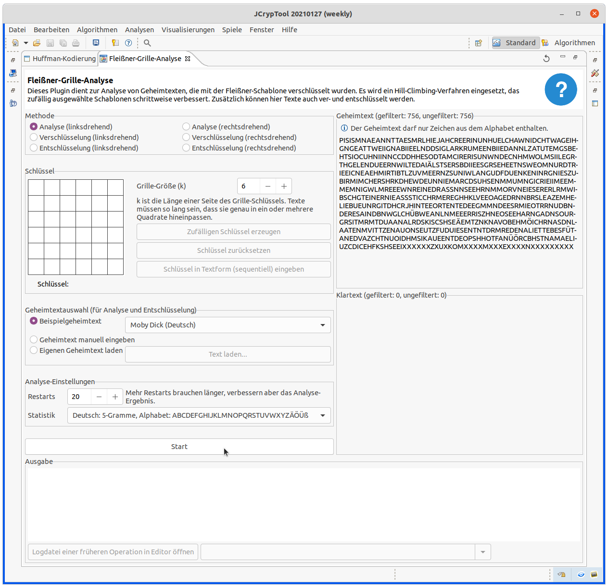
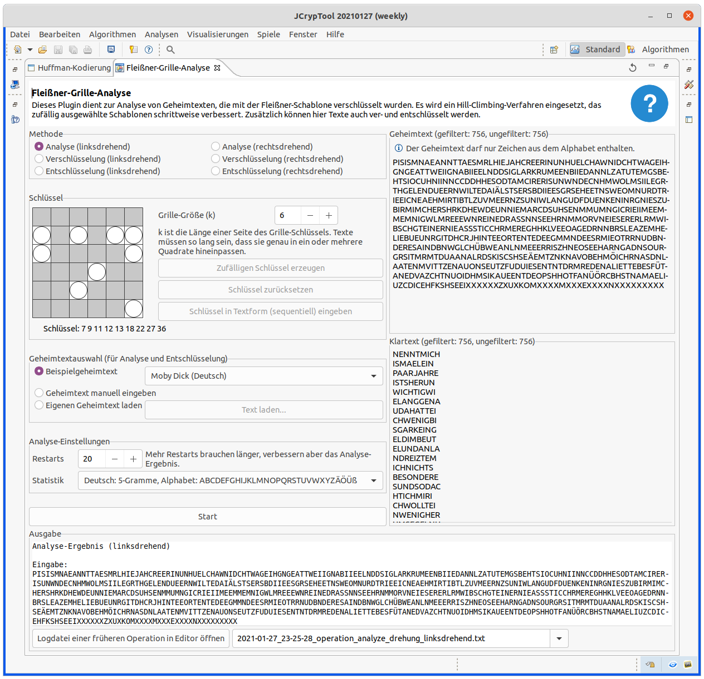

Mit diesem Plugin können Sie Texte mit der Fleißner-Schablone ver- und entschlüsseln, aber vor allem können Sie auch Fleißner-Geheimtexte automatisiert brechen (sowohl rechtsdrehende wie linksdrehende Schablonen; derzeit aber nur für gerade Schablonengrößen; demnächst auch für ungerade Schablonengrößen). Die maximale Schablonengröße ist 20 x 20.
Haben Sie als Methode "Verschlüsselung" gewählt und wollen einen eigenen Text verschlüsseln, müssen Sie Ihren Text im Feld "Klartext" eingeben. Ist als Methode "Entschlüsselung" oder "Analyse" gewählt, müssen Sie Ihren Text im Feld "Geheimtext" eingeben.
Diese Hilfe beschreibt das Verfahren (den Algorithmus) und die Bedienung des Plug-ins.
Bei der Fleißner-Chiffre schreibt man den Klartext auf ein Papier, durch die Löcher einer Schablone hindurch, die dreimal je um 90° zu drehen ist.
Weitere Informationen finden sich in der Wikipedia, und in der folgenden Präsentation: Fleißner-Schablone und -Analyse (Algorithmus).
Die Präsentation erklärt die Fleißner-Schablone und ihre Analyse. Neben einer kurzen Einführung zur Herkunft des Verfahrens wird der Aufbau der Schablone beschrieben sowie der mathematische Hintergrund. Im Anschluss befindet sich eine Erklärung zur Analyse und der dazu verwendeten Verfahren.
Zur Analyse wird derzeit pures Hill-Climbing verwendet. Um die Ergebnisse zu verbessern, ist geplant, auch Simulated Annealing zu implementieren. Während der Analyse-Prozess im Hintergund läuft, kann man in JCT weiterarbeiten. Abbrechen kann man den Hintergund-Job momentan aber noch nicht.
Initial hat das Plug-in folgende Einstellungen, so dass Sie sofort loslegen können:

Mit einem Klick auf den Button "Start" wird die Analyse durchgeführt.
Es dauert einen Moment, bis der Mauszeiger sich ändert und unten rechts in der Statuszeile angezeigt wird, dass ein evtl. länger laufender Hintergrundjob (für die Analyse) läuft.
Das folgende Bild zeigt das Ergebnis:

Im Feld "Klartext" sieht man das Ergebnis — ausgegeben in Zeilen der Länge 1/4 der Anzahl der Felder in der Schablone: hier also der Länge \( 9 = 36 / 4 \).
NENNTMICH ISMAELEIN PAARJAHRE ISTSHERUN WICHTIGWI ELANGGENA UDAHATTEI CHWENIGBI SGARKEING ...
Wenn man die entsprechenden Sonderzeichen (sie gehören nicht zum deutschen Alphabet) einfügt, erhält man:
NENNT MICH ISMAEL. EIN PAAR JAHRE IST'S HER, UNWICHTIG, WIE LANG GENAU. DA HATTE ICH WENIG BIS GAR KEIN G...
In der Gruppierung "Ausgabe" (unten) steht das Log, das automatisch nach jedem Klick auf "Start" neu erzeugt wird.
Darin finden Sie den gefundenen Schlüssel und auch den ursprünglichen Schlüssel, der für den zufällig erzeugten Beispieltext gewählt wurde, in drei Formaten:
7 9 11 ...,
(0,1) (0,2) (2,1)
Als Beispiel-Geheimtext wurde ein Text aus der deutschen Wikipedia für die Fleissner-Chiffre genommen. Wir verwendeten den Geheimtext, der durch das linksdrehende Verfahren erzeugt wurde; somit wird die linksdrehende Analyse gewählt. Als Alphabet wird das deutsche Alphabet gewählt.
Eingabetext aus Wikipedia:
DWNIIK LEKFIL RIPONE PEIEDA EEEODI NIZAYE
JCT findet als Klartext:
NLINEENZY KLOPAEDIE WIKIPEDIA DIEFREIEO
Die Statistiken der automatischen Analyse bilden die Sprache nicht perfekt ab; daher kann es passieren, dass Texte nicht ganz korrekt entschlüsselt werden. In diesem Beispiel konvergiert die Analyse bei einer Lösung, die noch manuell verbessert werden muss. Durch Vertauschen der oberen beiden und der unteren beiden Zeilen erhält man die richtige Lösung.
WIKIPEDIA DIEFREIEO NLINEENZY KLOPAEDIE = WIKIPEDIA DIE FREIE ONLINE ENZYKLOPAEDIE
Finale manuelle Korrekturen sind bei der Analyse klassischer Chiffren häufig anzutreffen.
In der Gruppierung "Klartext" ist der Klartext einzugeben.
Im Gruppierungstitel der beiden rechten Textfelder wird noch die Länge angegeben: "gefiltert" meint die Länge der Zeichen im Alphabet; "ungefiltert" meint die Länge des ursprünglichen Textes (aus dem bei der Filterung alle Nichtalphabet-Zeichen entfernt werden; außerdem werden Kleinbuchstaben als Großbuchstaben interpretiert, wie das in den n-Gramm-Statistiken üblich ist).
Das Ergebnis können Sie kopieren und auch wieder entschlüsseln.
Die Chiffre, die ursprünglich online stand, war inkorrekt. Sie können diese korrigierte Version verwenden:
PIENLZLALANIEGDSTFETHMOEEVEINONDTBRRMEAAUATNNMNPEOASROODPMFMHOAEMOTOEONDOAERPNXLAINEPFXECORPRDTEEIED THNETIUTNRIIOTYINEOWAINTDHMSSATOOURTINAGINONVATTEERDEDHDEUAMTROIINOENGSWALNRGAMTYAHTNESDAOEEIMSINTSA GAPBJOELSOENIHRSDHOMUAHRNDAYWTEMEIRLELERIAAITNFATAENRCTAHRRESHYOTVIICNLEIULCETSNEUAANRLRCOIHUATELSLI PWOEOENNSRGNSTELBSHBEAYSEUINDNCEISHNREGVOTUOFIEDNEBTAHRNEASCUENPAUNNSDWPIOEXITPTYUNGIFLIHKATSMVARAET
Als Klartext erhalten wir:
PLANSFORMANNEDMOONEXPEDITIONSORIGINATEDDURINGTHEEISENHOWERERAINANARTICLESERIESWERNHERVONBRAUNPOPULAR IZEDTHEIDEAOFAMOONEXPEDITIONAMANNEDMOONLANDINGPOSEDMANYTECHNICALCHALLENGESBESIDESGUIDANCEANDWEIGHTMA NAGEMENTATMOSPHERICREENTRYWITHOUTOVERHEATINGWASAMAJORHURDLEAFTERTHESOVIETUNIONSLAUNCHOFTHESPUTNIKSAT ELLITEVONBRAUNPROMOTEDAPLANFORTHEUNITEDSTATESARMYTOESTABLISHAMILITARYLUNAROUTPOSTBYNINETEENSIXTYFIVE
Durch Einfügen von Leer- und Sonderzeichen wird der Text wieder lesbarer:
PLANS FOR MANNED MOON EXPEDITIONS ORIGINATED DURING THE EISENHOWER ...
Je größer die Grille ist, desto schwerer ist es für die Analyse, eine gute Lösung zu finden. Eine höhere Anzahl von Restarts verlangsamt zwar die Analyse, aber findet normalerweise bessere Lösungen.
Diese Grille ist mit Schlüsselgröße 20 x 20 das anspruchsvollste Beispiel. Die Analyse braucht hier normalerweise weit mehr als 100 Restarts um sinnvoll zusammenhängende Teile des Klartextes zu finden.
Der Klartext ist Englisch; die Statistik-Sprache sollte entsprechend gewählt werden.
Ein weiteres Beispiel von der Kryptokolumne: Eine Chiffre von 1870. Die Grille-Größe ist 12.
Transkript (linksrotierend):
NVRDIEMHNEAT IRVOAEINFYIU BRNTTTEHSEUA FHSEREPEFDRF OORRMOSVTOHO EIDFNOTSHTUH RETRTEEEAMLE EUGGSTSRIELA TARIEGTEAMRY OBSFOUCTTOHT EMTRPHCOLIIE XPSIHRTEIEYN
Die Deutsche Wikipedia zur Grille-Chiffre hat zwei Beispiele: eines links- und eines rechtsrotierend. Die Grille-Größe ist 6.
Rechtsrotierend (Geheimtext):
KWNILK LODPII AIPENE FEDEDR IEEEII NEZAYO
Linksrotierend (Geheimtext):
DWNIIK LEKFIL RIPONE PEIEDA EEEODI NIZAYE
Der Klartext lautet in beiden Fällen:
WIKIPEDIA DIE FREIE ONLINE ENZYKLOPAEDIE
Beachten Sie, dass hier der Klartext sehr kurz ist, und dass die Statistiken die Sprache nicht perfekt abbilden können. Darum kann es nötig sein, noch manuelle Anpassungen vorzunehmen, nachdem die Analyse durchgeführt wurde.
Das Buch Gaines, Helen (1956): Cryptanalysis - a study of ciphers and their solution hat mehrere Beispiele. Die Grille-Größe und Sprache sowie die Lösung herauszufinden, bleibt dem Leser als Aufgabe überlassen.
Seite 35, Aufgabe 22:
TSTHE TTUSH OEDGF RDOEO GRISA AMSNM QEUGI BRIEL NOSTH SICLS ETSWA THABR YPAE
Seite 35, Aufgabe 23
AEKDS PVTOO NNAAO NRONP ROCTI EHTRE HNETI AFGSR HTNIL OVTEF FALMK IECLA ASNM
Seite 35, Aufgabe 25
RNIII NGTFL AILNN DEETD RVEUS ESTHR EIGEY FIANO URRDL GYTNH AEONR NEKCD EEISE YBSEF WYPGR LOLOE UOFHP ATVER EHERA EDFMI TRHNE EISYT QTSII SAUSG IEAIC ASLLK LLTTX HVHEA RXAX